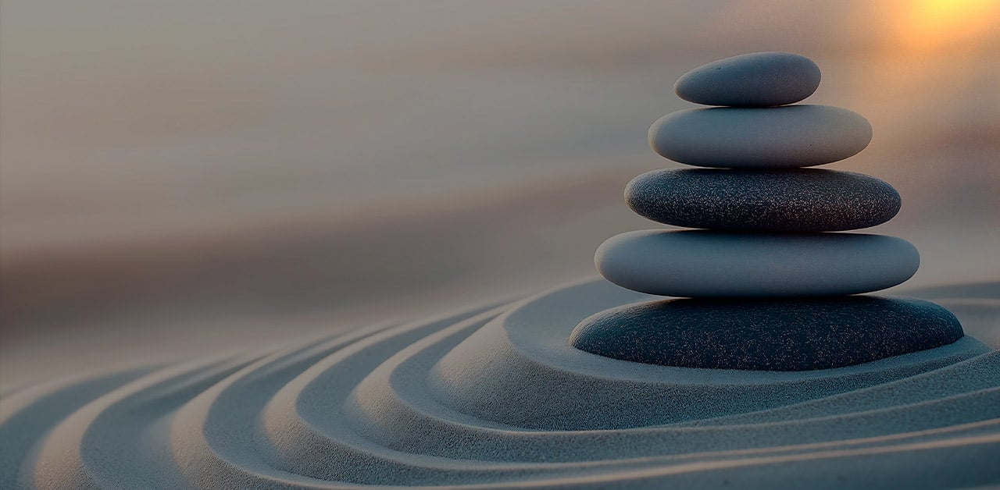
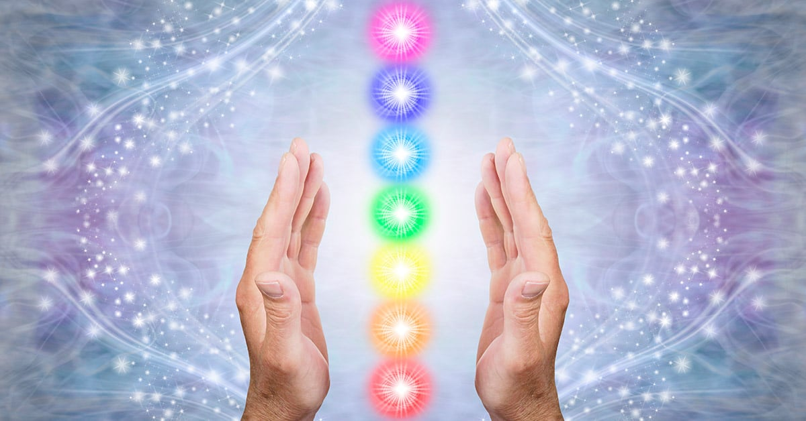
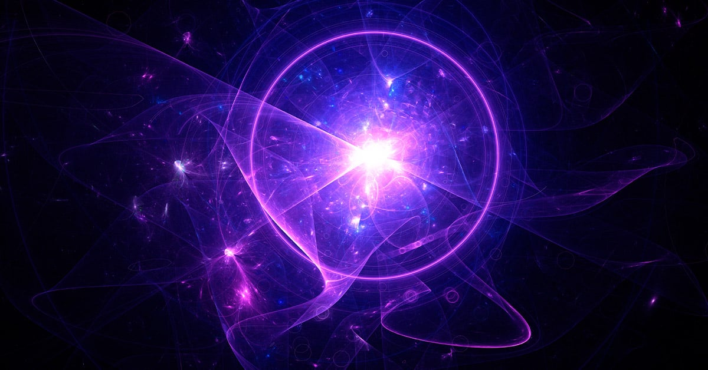
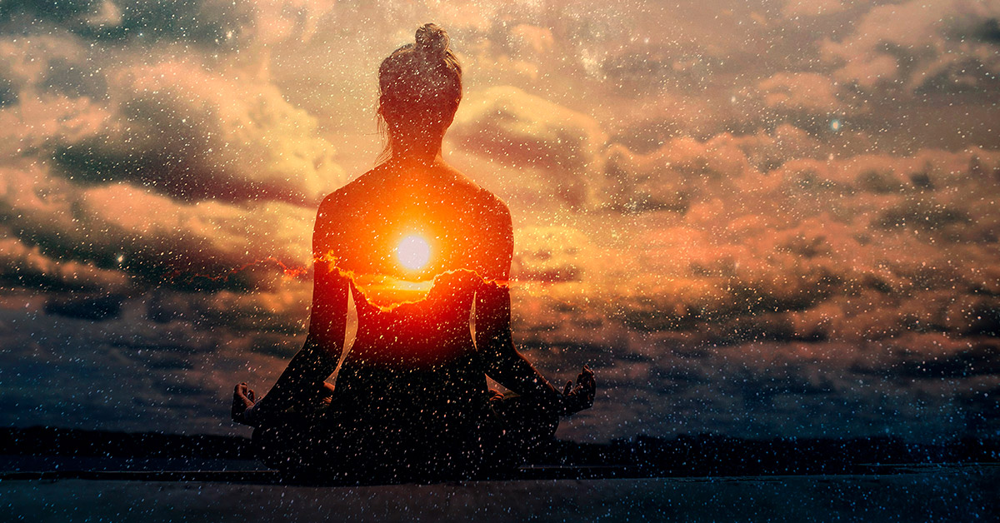
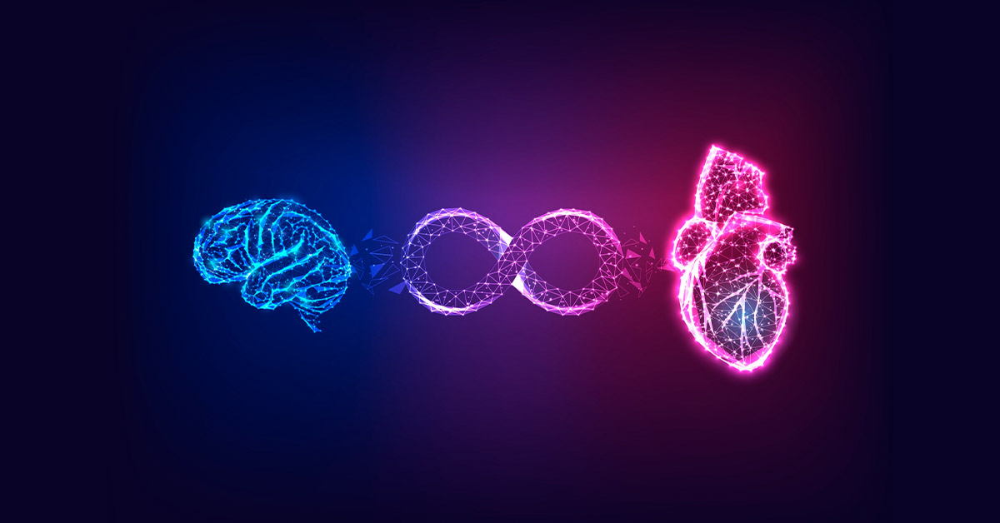
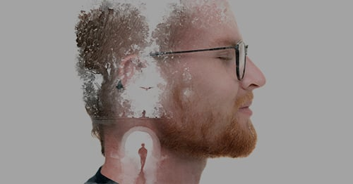
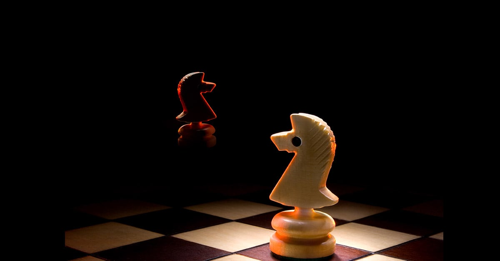
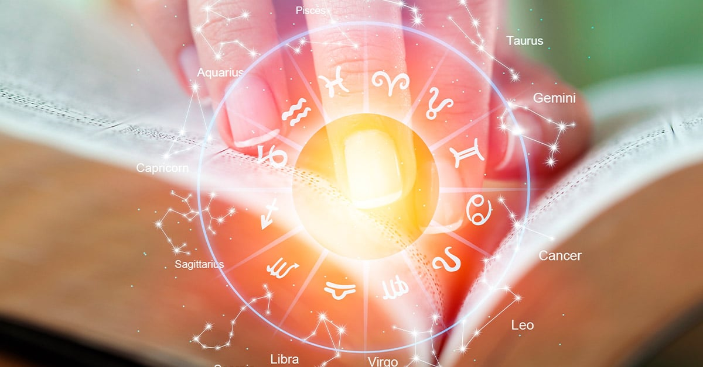
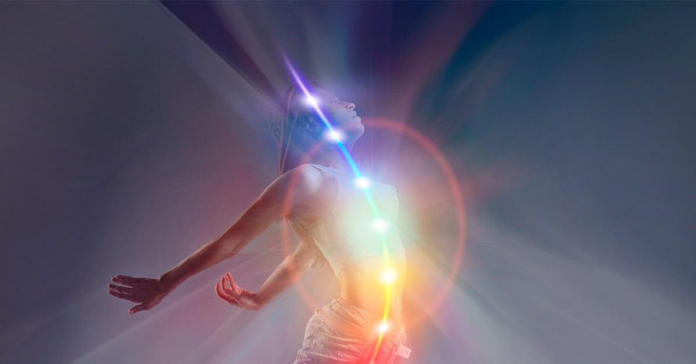

Harmonia
Do Caos à Harmonia Espiritual
Descubra como superar o caos interno e externo por meio da reconexão espiritual e alcançar harmonia em sua jornada de autoconhecimento.
Leia mais →Um acervo para aprofundar sua pesquisa e encontrar novas perspectivas sobre a vida.
17 palestras

Descubra como superar o caos interno e externo por meio da reconexão espiritual e alcançar harmonia em sua jornada de autoconhecimento.
Leia mais →Descubra a jornada além do conflito interno. Explore a busca pela união perdida na essência espiritual humana. Em busca da verdade e da harmonia.
Leia mais →
Desvende os segredos dos chakras: uma jornada espiritual para transformação profunda. Explore a influência desses centros energéticos na sua vida.
Leia mais →
Descubra o profundo significado da Mônada: a centelha divina que une a jornada espiritual em diferentes tradições esotéricas.
Leia mais →
Descubra o enigma da Kundalini: uma jornada espiritual que transcende os limites da mente e do corpo.
Leia mais →
Qual o método? Descubra a transformação espiritual da Rosacruz Áurea. Explore a jornada de autodescoberta e crescimento interior.
Leia mais →Qual nosso objetivo? Descubra os caminhos da transformação e da consciência com a Rosacruz Áurea. Explore seu potencial espiritual na vida moderna.
Leia mais →Descubra a busca pelo significado e transcendência com a Escola da Rosacruz Áurea na era moderna. Encontre respostas para ‘Quem somos?’.
Leia mais →
Explore a transcendência do eu e descubra uma conexão profunda com a essência universal. Uma jornada de autodescoberta e expansão da consciência.
Leia mais →Explore a jornada intrigante do despertar espiritual. Conecte-se com a essência cósmica, transcenda limites e descubra o poder divino interior.
Leia mais →Explorando visões espirituais sobre vida após a morte: reencarnação, transcendência e mistério. Uma jornada rumo ao desconhecido da existência.
Leia mais →
Desvende a dualidade sagrado-profano em busca da transcendência espiritual e autoconhecimento. Explore a jornada de autoexploração rumo à unidade interior.
Leia mais →
Explore a interligação de espiritualidade, religiosidade e esoterismo. Descubra as diferentes abordagens em busca do sagrado e transcendental.
Leia mais →
Construa a ponte interior: Jornada pelo autoconhecimento e conexão divina, transcenda limitações e descubra a essência do ser.
Leia mais →
Explore a jornada da Kundalini: coração, cabeça e sacro. Desperte para um novo nível de compreensão e conexão espiritual.
Leia mais →Descubra a importância do autoconhecimento e da conexão interior na busca da verdade e da transformação pessoal. Explore agora.
Leia mais →Explore a jornada do buscador espiritual, sua busca interior e transformação, seguindo a voz do mestre interior rumo à realização pessoal.
Leia mais →Experimente outra palavra ou limpe os filtros.